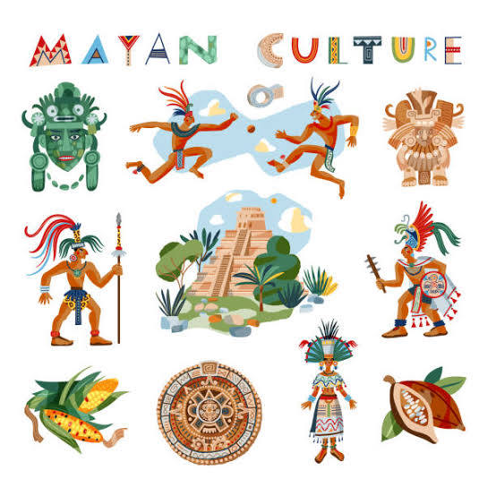
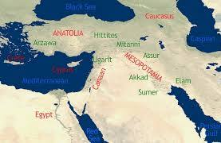
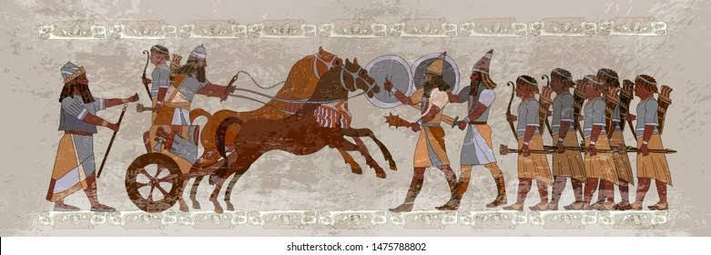
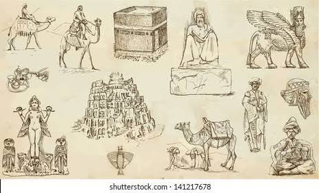
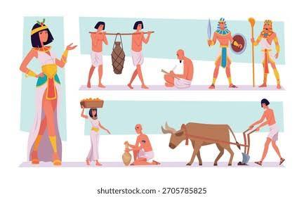

Learn on your own terms.
Eduqii helps you build confidence through guided tutorials, practice quizzes, and progress tracking.
Practice with purpose.
Try short quizzes tailored to your skills and review instant feedback to improve faster.

Track your growth.
See how your points and achievements add up as you complete lessons and challenges.
Ada Lovelace
Often called the first computer programmer, Ada Lovelace wrote the first algorithm for Charles Babbage's Analytical Engine and foresaw the future of computing beyond mere calculation.

Civilisation
Explore the history of ideas and achievements that shaped human society from ancient times to the modern era.

The World
Discover global cultures, languages, and connections that make our world vibrant and interdependent.
Personalised learning pathways. Designed for your goals.
Start with topics that matter most to you and follow a guided path built around your exam schedule, study habits, and performance strengths.
Eduqii helps students move from confusion to clarity with structured lessons, interactive practice, and progress checkpoints.

Exam-ready confidence. Practice with feedback.
Build momentum with quizzes, revision notes, and exam strategy content that keeps you focused and ready for peak performance.
Track the skills you master, review instant explanations, and identify gaps before test day.

Community support. Stay motivated together.
Join a learning community with shared goals, achievement badges, and friendly challenges that make study time more rewarding.
Share progress, compare leaderboards, and celebrate improvement with classmates and mentors.
